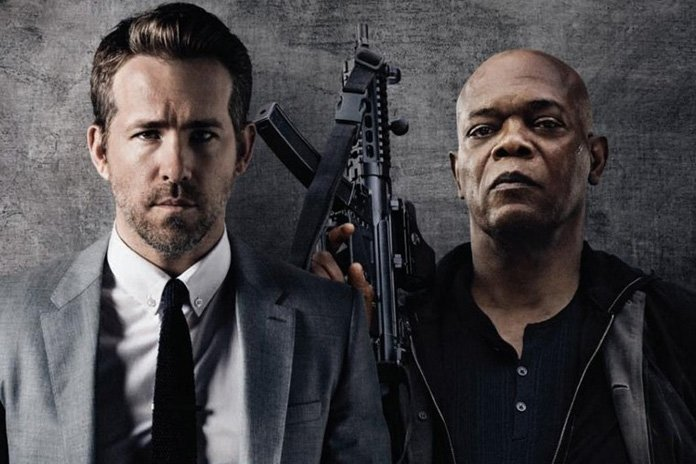

Svojom reputacijom u otrcanima nakon bolno neuspješne isporuke uglednog japanskog klijenta, bivši trostruki zaštitni agent Michael Bryce (Ryan Reynolds), dvije godine nakon sramotnog incidenta, sveo se na pukog drugorazrednog tjelohranitelja. . U tim bi okolnostima Bryce učinio sve kako bi dokazao svoju vrijednost i ubrzo prihvaća ponudu Interpola za pratnju međunarodnog ubojice Dariusa Kincaida (Samuel L. Jackson) iz Manchestera u Haag. Zadatak se čini jednostavan: Bryce ga mora prevesti od točke A do točke B; unatoč tome, putovanje u Nizozemsku dugo je i opasno, a Kincaid - kao jedini koji ima petlju i dovoljno čvrstih dokaza da svjedoči protiv tiranskog bjeloruskog diktatora - očita je meta. Nesumnjivo je to težak posao, jer će neusklađeni dvojac morati ostaviti po strani svoje zamjerke i utrkivati se protiv sata u neprekidnom koncertu za metke. Može li ubojiti tjelohranitelj provesti najvažniju misiju u svojoj karijeri?